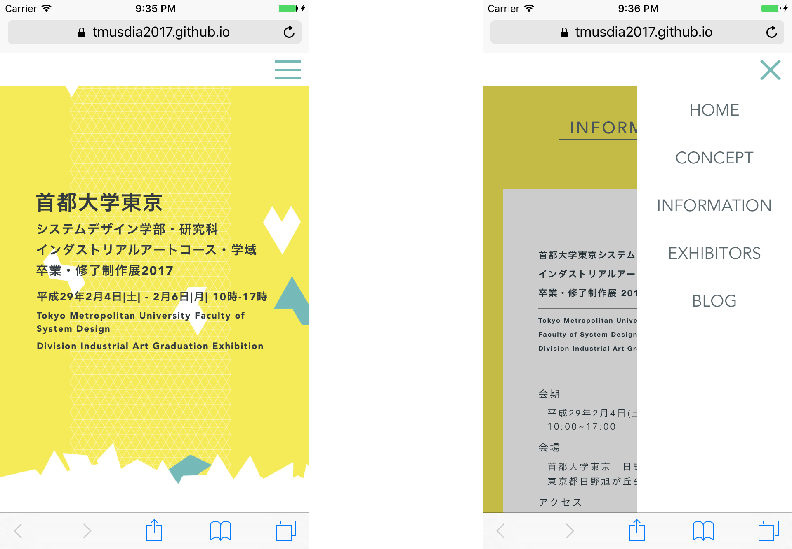
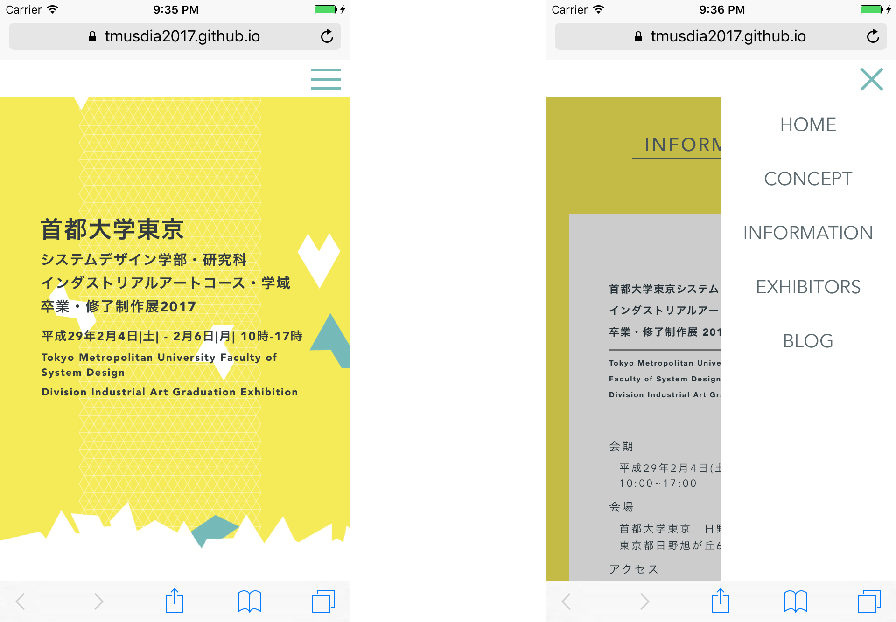
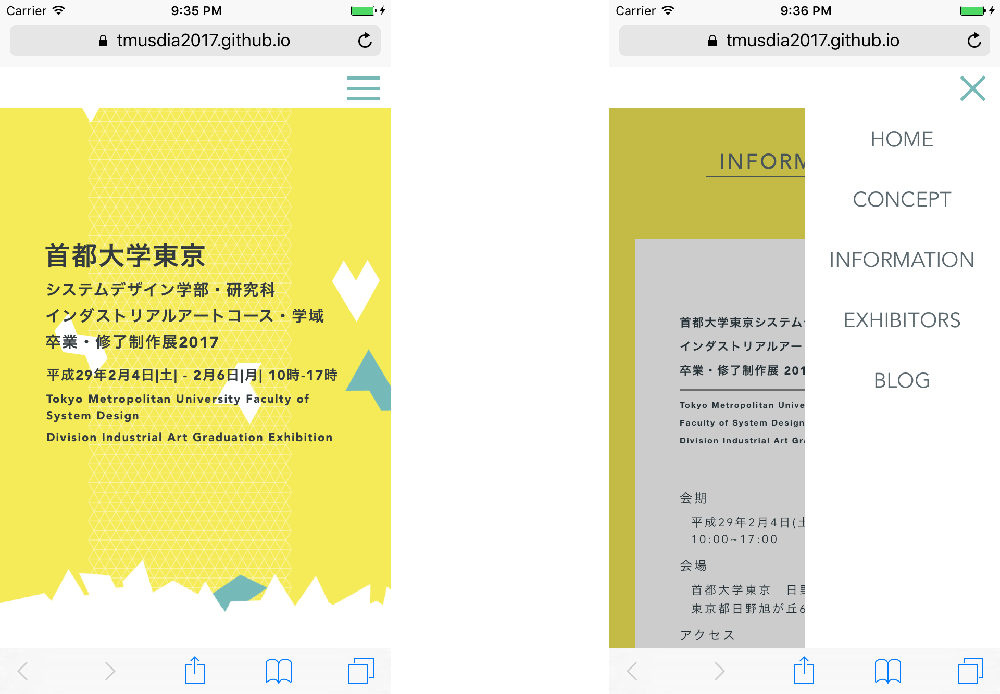

自分たちの卒業制作展の告知サイトです。
2017年のテーマは「piece」。１２の研究室を12の形態を持つヘキサモンドになぞらえました。
それぞれ専門分野の異なる研究室がひとつのコースとしてまとまっている様子を、
ひとつひとつのピースが混ざり、積み重なるアニメーションで象徴的に表現しました。
web site

 

- Web -


2017年のテーマは「piece」。１２の研究室を12の形態を持つヘキサモンドになぞらえました。
それぞれ専門分野の異なる研究室がひとつのコースとしてまとまっている様子を、
ひとつひとつのピースが混ざり、積み重なるアニメーションで象徴的に表現しました。
web site
